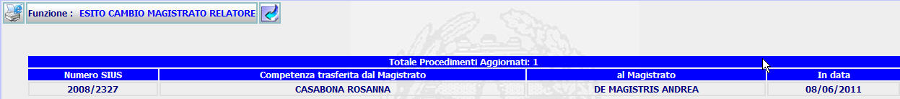

Per tornare alla maschera precedente, Cambio Magistrato RELATORE, l'utente deve:
GENERALITA'
ESITO CAMBIO MAGISTRATO RELATORE: La funzione consente di visualizzare i procedimento di cui si è eseguito un cambio di competenza del Magistrato
LE MASCHERE VIDEO
La funzione in esame viene realizzata attraverso l'utilizzo della seguente maschera che riporta gli elementi descrittivi del cambio del magistrato:

COME FARE PER ...
|
Per tornare alla maschera precedente, Cambio Magistrato RELATORE, l'utente deve: |
Cliccare sul pulsante
; si aprirà la maschera corrispondente alla funzione precedente.
PULSANTI
Sono presenti
i pulsanti
 e
e
 facenti parte del gruppo di
pulsanti di "Uso Comune".
facenti parte del gruppo di
pulsanti di "Uso Comune".